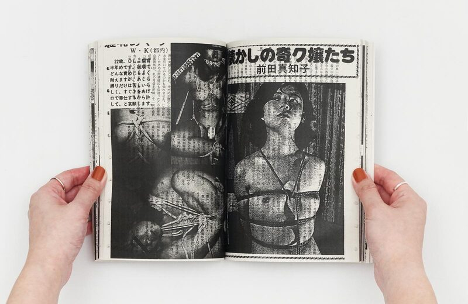
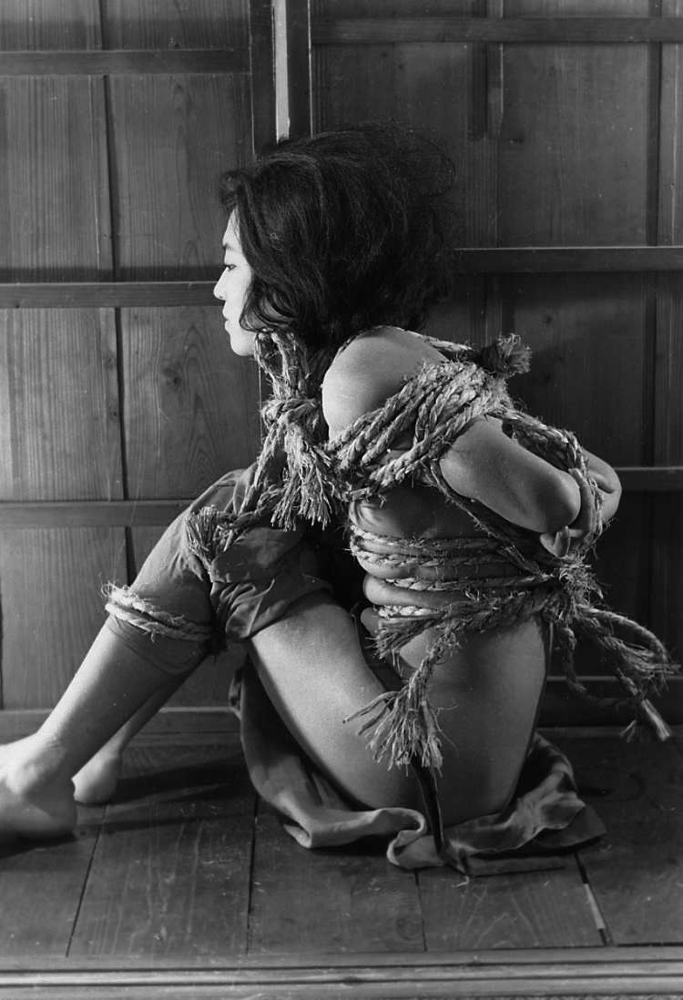
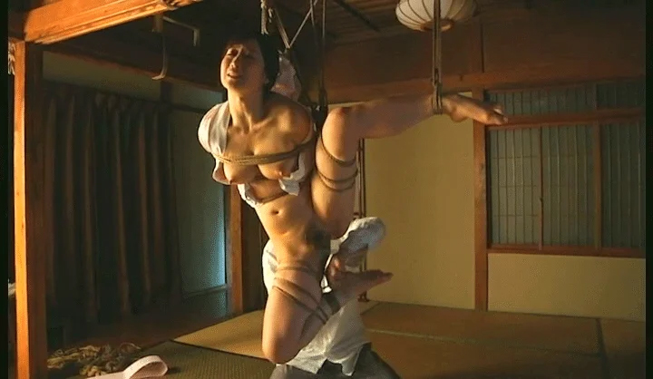

¿Qué es el Shibari?
Origen y marco de la atadura japonesa

El Shibari es una práctica que busca conseguir la inmovilización corporal por medio de cuerdas de fibra natural en base a patrones estéticos diseñados para habilitar que la restricción demovimiento pueda ser mantenida por periodos prolongados de tiempo para su uso con fines de control y Dominación dentro de un contexto Sado-Masoquista. Esta disciplina se desarrolló a partir de la disciplina de atadura militar Samurái conocida como Hojojutsu.

En la década de los 1920's el pintor y fotógrafo japonés Seiu Itō descubre el Hojojutsu y empieza a experimentar con estos patrones de inmovilización con prostitutas y sus propias modelos, adaptando el antiguo arte militar a la fisionomía del cuerpo femenino de modo que facilite el contacto sexual.

Tras estas primeras exploraciones, la práctica comienza a difundirse en medios impresos japoneses de mediados del siglo XX. Revistas como Kitan Club publicaban relatos, ilustraciones y fotografías que integraban la atadura dentro de narrativas eróticas, estableciendo una estética reconocible que combinaba vulnerabilidad, control y composición visual.
Estas publicaciones no solo consolidaron el lenguaje visual del Shibari moderno, sino que también contribuyeron a su transición desde un contexto privado hacia una forma de expresión con componentes artísticos, performativos y editoriales.

Con el desarrollo de las redes de comunicación, la atadura japonesa obtuvo un alcance de nivel global, convirtiéndose en la forma de bondage preferida por una gran cantidad de practicantes del sadomasoquismo en todo el planeta.
Este crecimiento se debe en gran parte a su complejidad técnica y a la profundidad de la experiencia que propone, lo cual representa una ventaja frente a otros estilos más inmediatos o funcionales. El Shibari permite construir interacciones más largas, intensas y progresivas entre dominante y sumisa, donde el proceso en sí mismo adquiere valor más allá del resultado final.
Sin embargo, con su expansión también han surgido intentos de reinterpretar o suavizar la práctica para hacerla más accesible o aceptable para el público general, en algunos casos diluyendo su carácter sadomasoquista original. Frente a esto, resulta importante reconocer su contexto, su evolución y mantener una comprensión clara de los elementos que le dan sentido dentro de su práctica contemporánea.

A diferencia del bondage occidental o americano, que suele enfocarse en la restricción funcional o inmediata del cuerpo, el Shibari se caracteriza por su complejidad técnica y su intención de prolongar la experiencia en el tiempo. Las ataduras no solo cumplen una función de inmovilización, sino que construyen una interacción progresiva entre dominante y sumisa, donde cada fase del proceso —desde la colocación de la cuerda hasta la consolidación de la estructura— forma parte de la experiencia.
Esta complejidad implica también una mayor curva de aprendizaje, tanto a nivel técnico como comunicacional. El desarrollo en Shibari requiere práctica constante, comprensión del cuerpo humano y una atención detallada a la tensión, la circulación y las respuestas físicas y emocionales de la persona atada, diferenciándose así de enfoques más simplificados o utilitarios del bondage.
